Man kann in Tangalle so friedlich vor sich hingammeln, dass wir unseren Aufenthalt verlängert haben. Damit uns der Lesestoff nicht sofort ausgeht (geht das mit Kindle überhaupt?), haben wir ein kleines Ausflugsprogramm zusammengestellt.
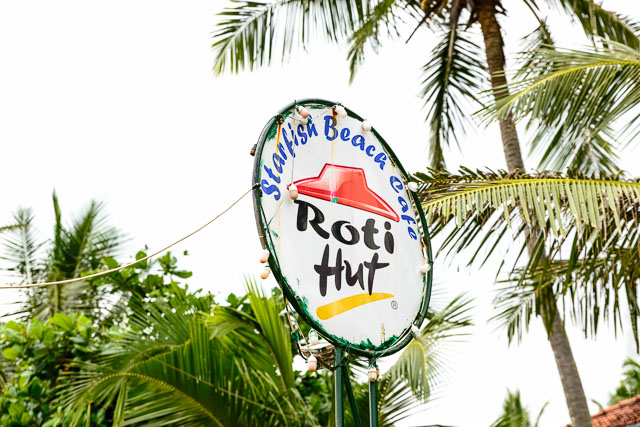Yala Nationalpark
Zum Yala Nationalpark mussten wir schon um fünf Uhr morgens aufbrechen. Die Fahrt führt an Hambantota vorbei, wo die Regierung nach langem Palaver einen großen Tiefseehafen und einen A380 tauglichen Flugplatz buchstäblich in den Sand gesetzt hat. Mitten im nirgendwo wird die Küstenstraße plötzlich zu einer sechsspurigen Autobahn mit Kleeblättern nach amerikanischem Vorbild. Man sieht noch keine Flugzeuge, kaum Autos und die zwei einsamen Kräne im Hafen verladen noch nichts. Dafür haben die Baumaschinen die schöne Küste in eine Schlammwüste verwandelt. Glücklicherweise sind die Nationalparks der Umgebung noch nicht betroffen.
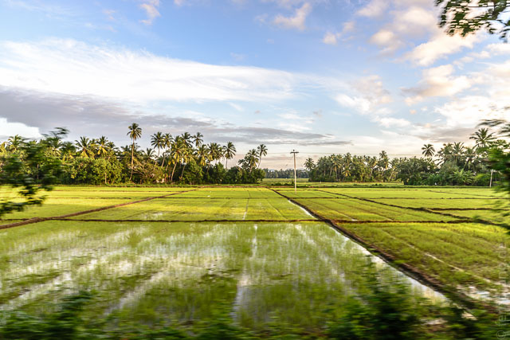 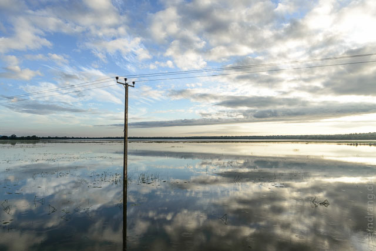Yala ist eigentlich riesig, aber die Jeeps fahren oft in Kolonne. Um Elefanten zu sehen standen wir 20 Minuten (vergeblich) im Stau, was bei einer "Safari" ziemlich albern ist. Aber letztlich haben wir noch Elefanten, Leoparden und viele Pfauen – die Prinzen des Geländes – sehen können. Die Landschaft hat etwas Afrikanisches, auch wenn ein Game Drive hier mit den Revieren südlich der Sahara kaum mithalten kann. Am Ende reißen es die Pfauen, die dem Ensemble indischen Charme verleihen. (Wir dürfen natürlich den schwarzen Fleck auf dem Kilometer entfernten Berg nicht vergessen: "Bear! You're very lucky!") Nach ein paar Stunden in dem monströsen, rappelnden Gefährt waren wir nicht böse, dass es wieder nach Hause ging.
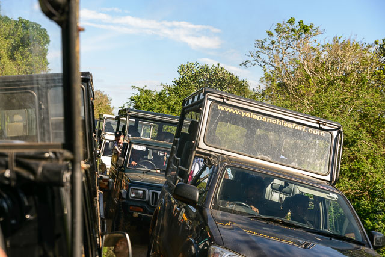 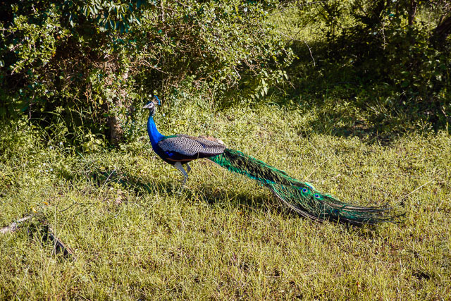 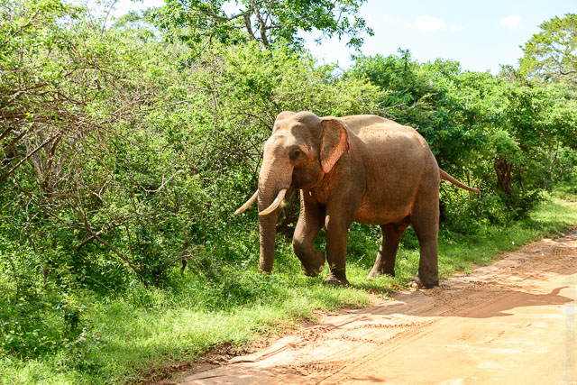 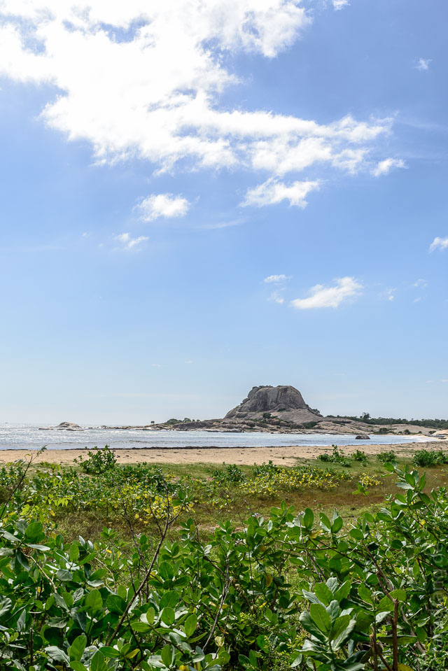Mulgirigala
Die nächste Zerstreuung war ein Rollerausflug zum Tempel von Mulgirigala. Zum ersten Mal konnten wir uns eigenhändig in den Straßenverkehr stürzen. So lang die Straßen nicht leer sind, ist auch Linksverkehr nicht so schlimm. Und mit viel Hupen und Blinken fällt man gar nicht als Fremdkörper auf. Unser Weg führte uns durch Reisfelder und Palmen weg von der Küste ins Inland, wo dann eher Kühe als Busse die Verkehrshindernisse waren. Die Landschaft wird hinter Biatella etwas hügliger bis man irgendwann vor dem senkrecht aufragenden Felsen von Mulgirigala ankommt. Über halsbrecherischen Treppen, die M.C. Escher sicher gefallen hätten, gelangt man zu toll bemalten Höhlen mit zahllosen Buddha-Statuen. Es ist nicht ganz so toll wie in Dambulla, aber trotzdem sehr sehenswert. Die Ausstaffierung der Höhlen ist etwas jünger und wirkt irgendwie europäisch beeinflusst. Von der Spitze aus hat man einen Rundumblick auf den endlosen Palmenwald.
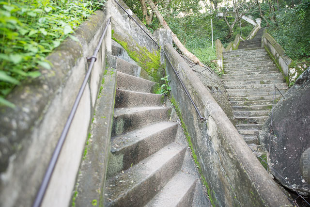 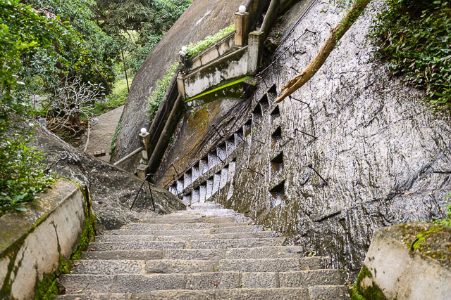 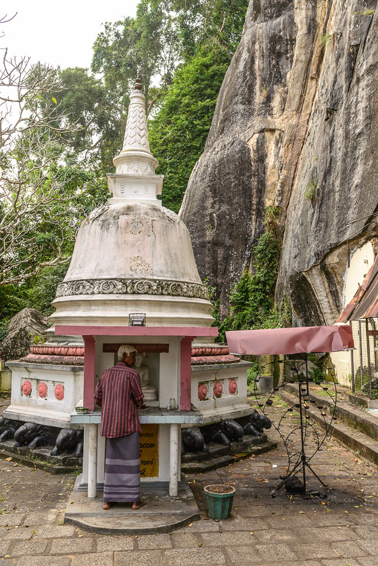 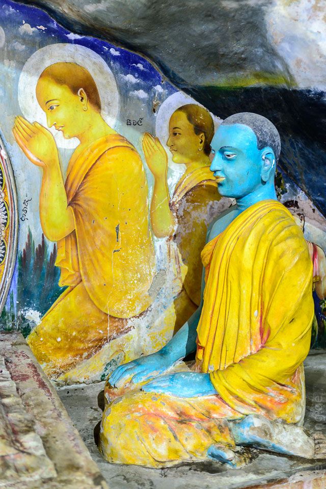 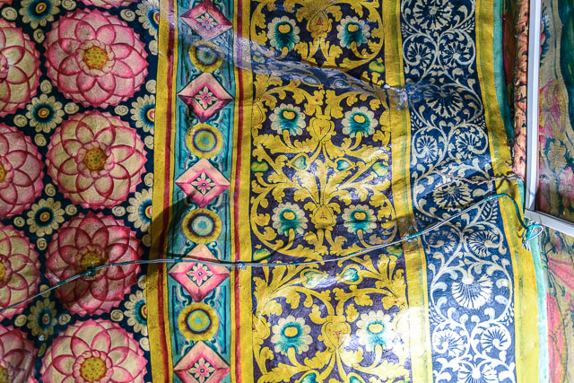 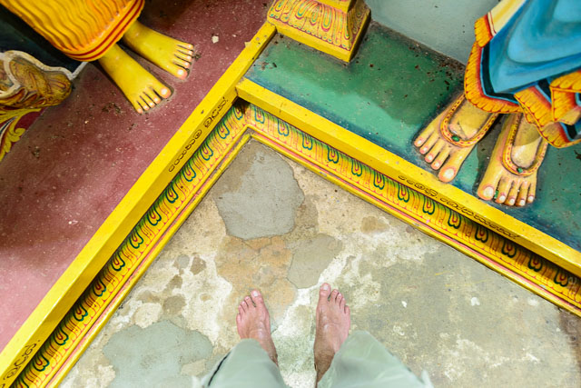Blow Hole
Auf dem Rückweg haben wir uns Dank Handy mit GPS-Karten durch winzige Wege durchs Nirgendwo zum "Blow Hole" an der Küste durchgeschlagen. Für dieses langweilige "Naturschauspiel" wird sogar horrender Eintritt verlangt. Aus einer Felsritze schießt ab und zu Wasser in die Höhe, das von den Wellen unterirdisch hochgepresst wird. Die Anwesenden waren wenig beeindruckt.
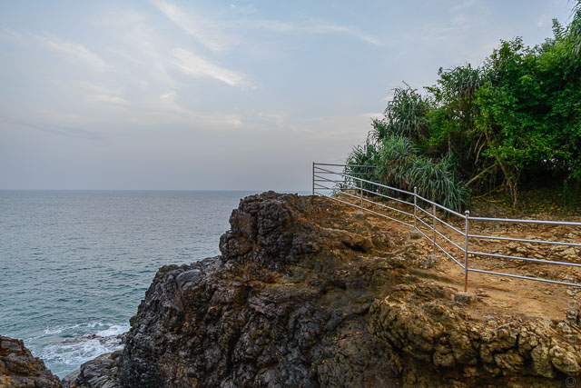 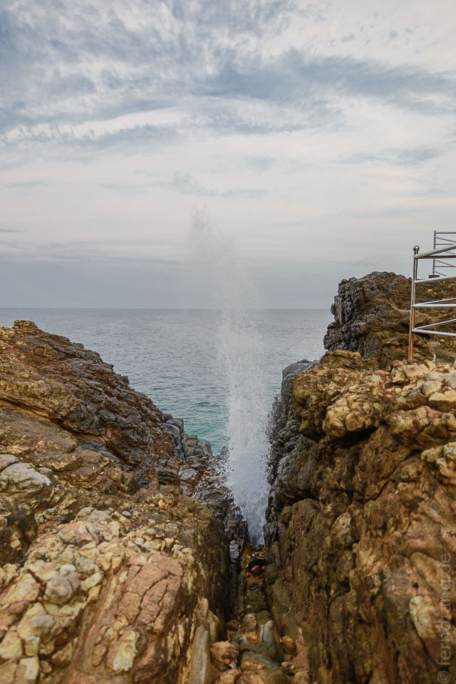Der Rückweg hat sich aber extrem gelohnt. Als wir gerade in der Dämmerung an der Mawalla Lagoon vorbeifuhren, haben sich Tausende von Flughunden aus den umliegenden Wäldern erhoben um auf ihren abendlichen Beutezug zu gehen. Vor dem wilden Abendrot haben sich die majestätischen Scharen wie Batmans Hilfsstaffel ausgemacht.
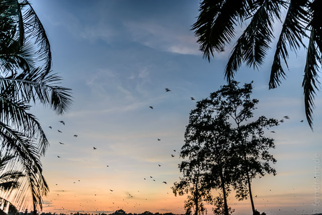Dagegen war der Silvester-Abend am Strand ziemlich unspektakulär und sogar wieder verregnet. Schnell weg hier!